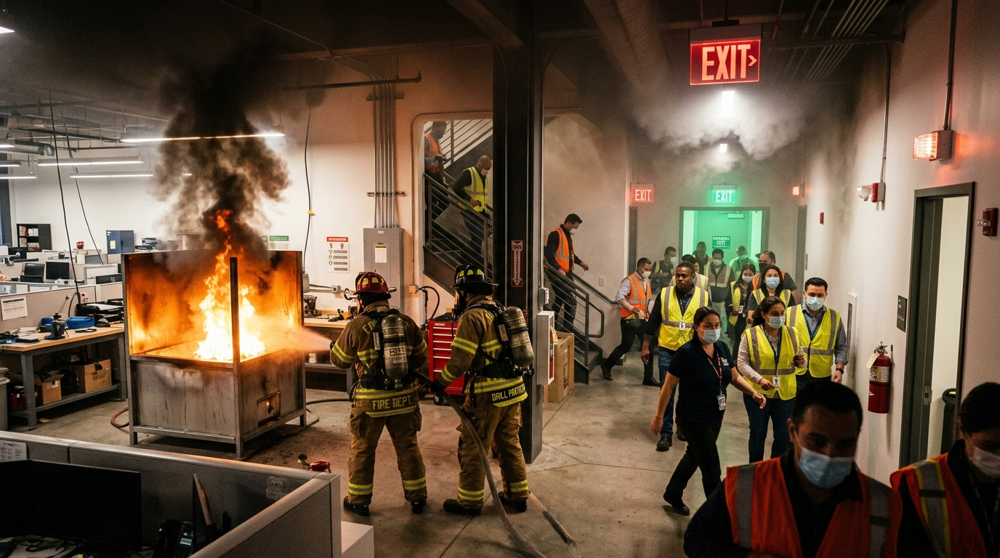

Introducción al Entrenamiento Inmersivo
La evolución de la capacitación en seguridad industrial y protección civil mediante sistemas de realidad virtual autónomos de alta fidelidad háptica y espacial.
Los incendios representan una de las amenazas más devastadoras para la vida humana y la infraestructura de centros educativos, empresas y hogares. En los primeros 60 a 120 segundos de un conato de incendio, una intervención certera con un extintor portátil puede neutralizar la contingencia antes del fenómeno de combustión súbita generalizada (flashover).
No obstante, la capacitación tradicional se enfrenta a limitaciones severas: los simulacros reales son costosos, generan contaminación por la descarga de polvos químicos o agentes fluorados, y presentan un riesgo intrínseco de quemaduras o accidentes para el personal inexperto.

Siniestro ControladoEl Desafío del Conato
Los primeros minutos son decisivos: el usuario debe dominar el pánico, elegir el extintor correcto y aplicar la técnica P.A.S.S. bajo presión.
Pilares de la Formación Virtual en Seguridad
La manipulación repetida del pasador de seguridad, la sujeción de la manguera y el gatillado en VR condiciona reflejos neuromotores que se transfieren de manera inmediata al mundo real en momentos de crisis.
Los alumnos pueden cometer errores de novato —como apuntar al humo en vez de a la base de la flama o usar un extintor de agua en un fuego eléctrico— y observar sus consecuencias didácticas sin daños colaterales.
El motor de simulación registra milimétricamente el ángulo de dispersión, la distancia respecto al fuego, el tiempo de descarga y la cadencia del barrido para generar reportes cuantitativos de competencia.
Comparativa: Capacitación Convencional vs. Simulador VR
| Criterio Pedagógico / Operativo | Capacitación Clásica en Vivo | Simulador Inmersivo Meta Quest 2 |
|---|---|---|
| Costo por Alumno | Alto (recarga de extintor ~$25-$50 USD por intento) | Casi nulo tras la adquisición del hardware VR |
| Huella Ecológica | Emisiones de CO2, residuos químicos y consumo hídrico | 100% limpia y sostenible, cero residuos |
| Repetibilidad | Limitada (1 o 2 descargas por alumno por sesión) | Ilimitada (repetición hasta lograr la maestría) |
| Seguridad Física | Riesgo de quemaduras, asfixia o retroceso | Completamente segura dentro del entorno universitario |
| Diversidad de Escenarios | Solo bandejas exteriores de combustible | Oficinas, laboratorios, talleres mecánicos, cocinas |